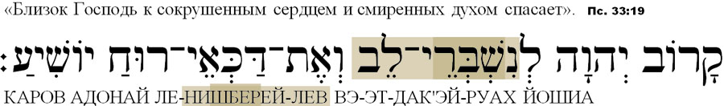
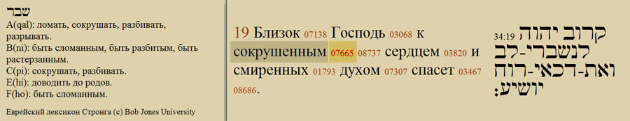
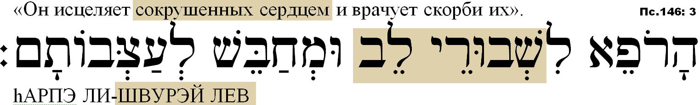

Арт-мидраш · Праздники в Библии
Звуки шофара. ШВАРИМ. Йом Кипур
Посмотрим в Писании значение трубления шофара - ШВАРИМ.
Автор: Эфраим Калиш
Продолжаем разговор о символике, о значении, о смысле трубления шофара. Как известно, в этой традиции различают три трубления: .
Посмотрим в Писании значение трубления ШВАРИМ. Для начала я хочу поискать в симфонии фразу «сокрушен сердцем». Почему именно эта фраза? Потому что эта фраза отражает суть одного из трублений, о котором мы сейчас говорим, - суть трубления ШВАРИМ. Находим несколько мест, где встречается именно эта фраза «сокрушенный сердцем». Я хочу посмотреть Псалом 33:19:

На иврите я хочу глянуть: «Каров Адонай лэнишбирей лев…» (сокрушенный – «шавар» на иврите). Трубление, которое мы рассматриваем сегодня, называется на иврите ШВАРИМ. «Шавир» - это единственное число, «шварим» - множественное. Значение этого корня – ломать, сокрушать, разбивать, разрывать (если смотреть по номерам Стронга).

Тут надо оговориться, что в Писании мы не найдем вот этой фразы устойчивой, которая связывала бы глагол или это состояние сокрушения с шофаром. Если ТРУА – крик радости, это трубление мы находим неоднократно в Писании. Также многократно находим другое трубление, о котором мы еще буем говорить, - ТКИА. Но слово ШВАРИМ вместе с шофаром мы не встречаем в Писании. Тем не менее, наши мудрецы решили, что эта фраза «сокрушенный сердцем» помогла им сделать выбор. Они взяли это название ШВАРИМ, как наиболее подходящее для выражения сути того, что делает шофар в преддверии Судного дня (Йом Кипур), дня трепета, сути того, что делает шофар с сердцем всякого человека, кто ищет Создателя.
Давайте мы посмотрим еще одно место:

На иврите «арпэ лишвурэй лев», обратите внимание, что тот же корень «шавур». «Исцеляющий сокрушенных сердцем», - это важное действие, которое приготавливает сокрушение сердца человека. Бог обещает такому человеку исцеление.
Еще одно место, которое я хотел бы посмотреть, оно очень известное, из пророка Исаии 61 глава:
«1. Дух Господа Бога на Мне, ибо Господь помазал Меня благовествовать нищим, послал Меня исцелять сокрушенных сердцем, проповедовать пленным освобождение и узникам открытие темницы, 2. Проповедовать лето Господне благоприятное».
На иврите «2. ЛИКРО ШНАТ-РАЦОН ЛЕ-АДОНАЙ…», переведено в синодальном как «лето Господне благоприятное». Точный перевод на современный язык: «Год благоволения Господа», другими словами, - ЮБИЛЕЙ, пятидесятый год, новое начало, когда рабы выпускаются на свободу, когда происходит возвращение в свой удел и когда земля и все права возвращаются тому, кто их утратил.

Наша фраза в этих стихах – «исцелять сокрушенных сердцем». Здесь опять-таки очень важное действие, о котором мы уже говорили, – исцеление всякого, сокрушенного сердцем. Шофар призывает к сокрушению, он помогает сокрушению сердца человека, который ищет лица Всевышнего.
Итак, трубление ШВАРИМ, которое мы разбираем, - это очень сильное действие, которое производит шофар для тех, кто ищет лица Божьего. Это действие влечет за собой исцеление, восстановление, освобождение. Номер слова «сокрушенных» по Стронгу 07665, довольно много мы найдем мест в Писании с этим корнем, стоит исследовать.